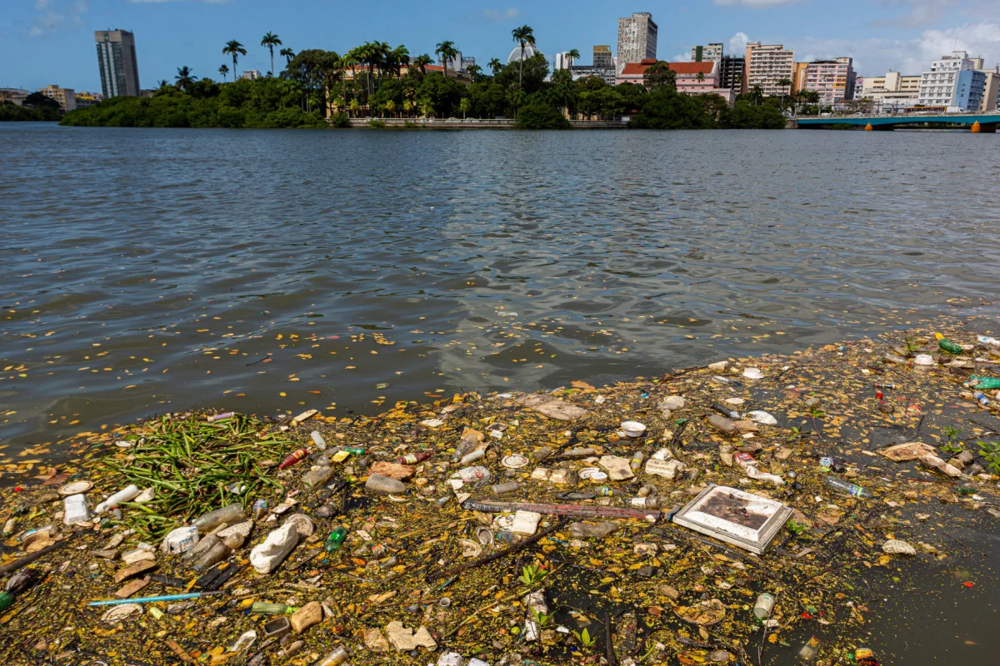

PROBLEMAS
CONTEXTO:
ATORES:
IMPACTO:
CONTORNOS:
MÉTRICA DE SUCESSO:
RESTRIÇÕES:
CLIENTES ENTEDIADOS NA FILA DA LANCHONETE

CONTEXTO: Apaonciasp apicnapisncipanscpansoc cpinapcins pcans acpioa cios c apicnapiscn oia cpia c api cspi cp as cabspibc aiovbiavbk
ATORES: IAnc ipancoanscpoianspoa
IMPACTO: cakc naicnpianca piancipanipsn apnaipncapinaspcnaipefjaocma naipcnaesicna piancfpiqe ncpiaenn qipnipcenas
CONTORNOS:acoubascouabcoian ac aoicnaoisncs aiocnaiosn
MÉTRICA DE SUCESSO: cjoa cinaip naepionqpapicnaeipnc inacpiane
RESTRIÇÕES: acinaicnaipncpaencpaein aincopinapinecpaincipanapcnpaiencpiancpiancpiancp aifncapi ncienfpiaencpe iandpiaencpanepcinaepi iadncpiaencpiaenc naipcnapienipancapien piaenfpian pianf apinfpiaen fpiaenfpiqe na
RIO CAPIBARIBE EXTREMAMENTE POLUÍDO
